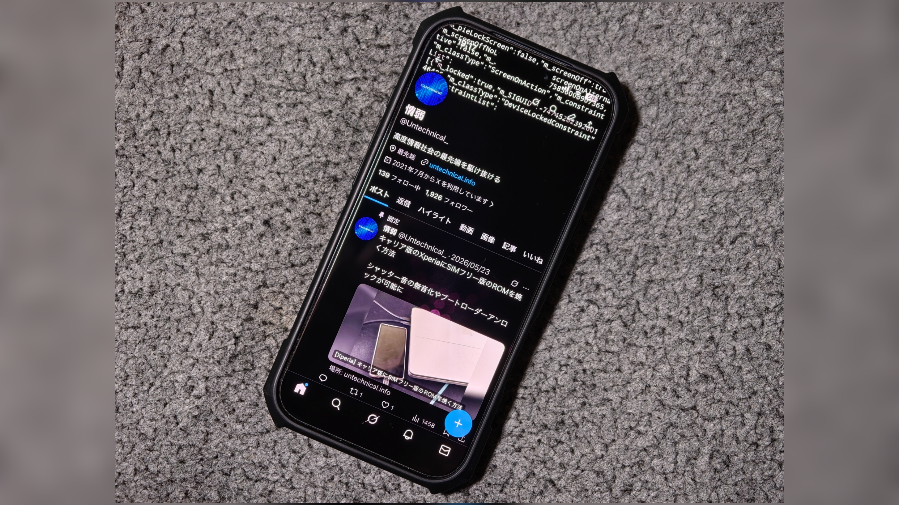
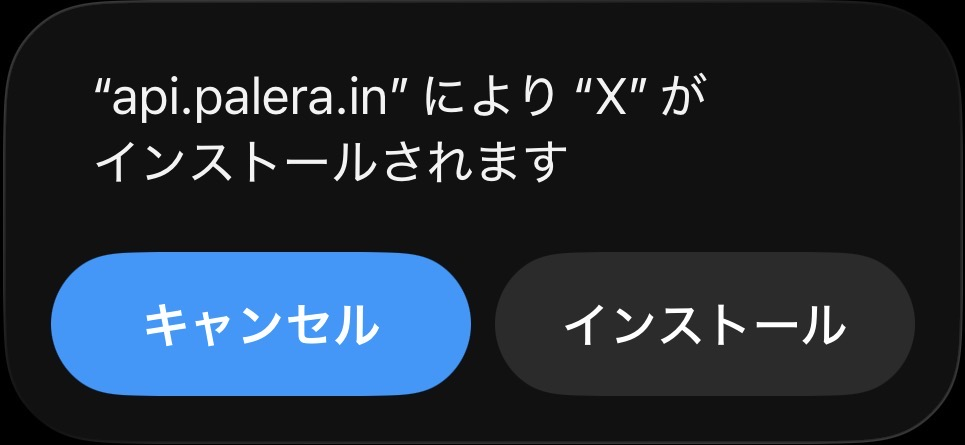
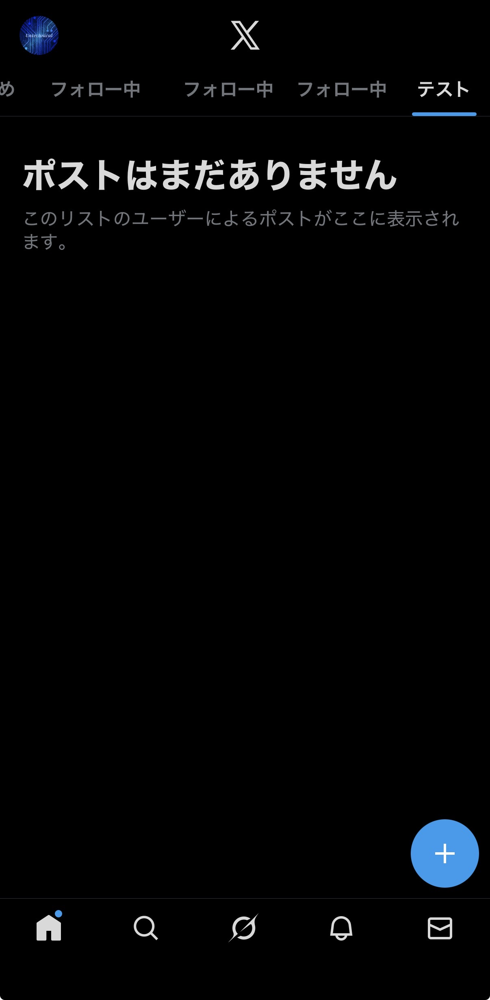
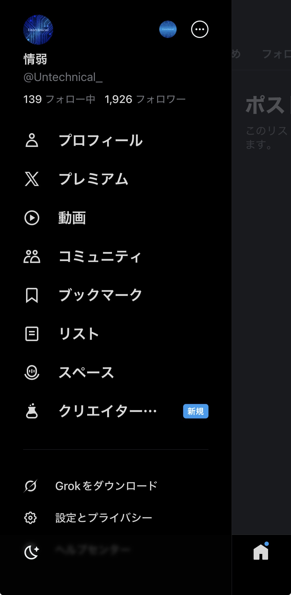
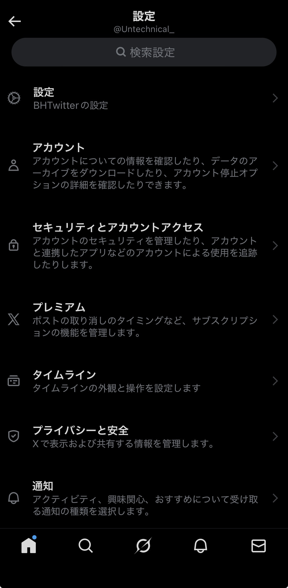
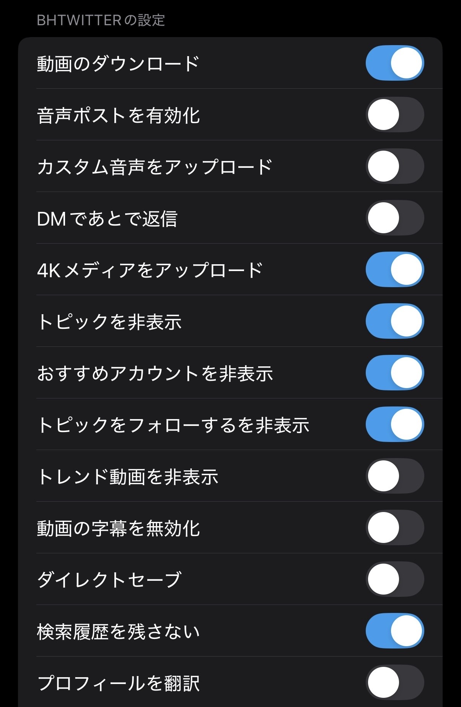
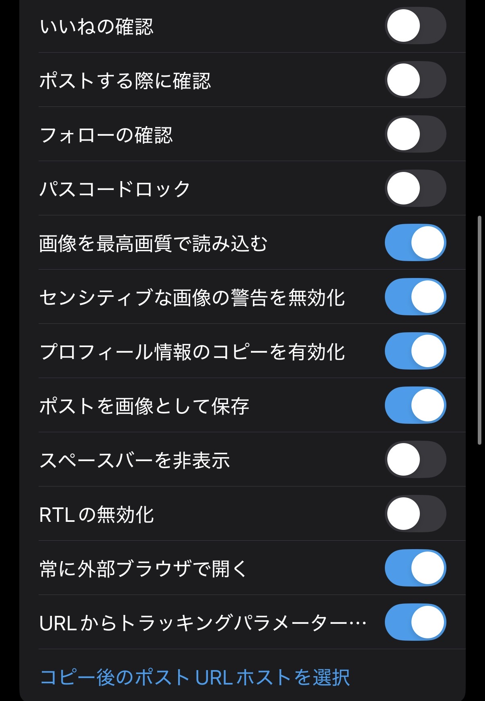
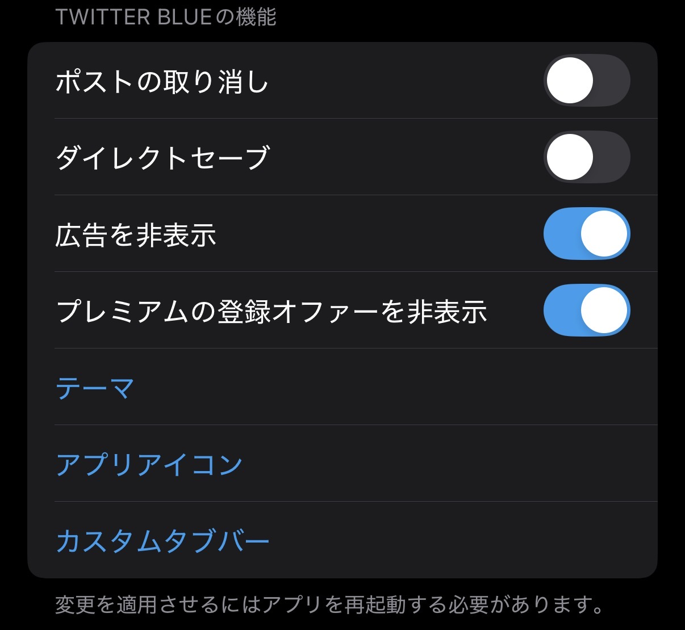
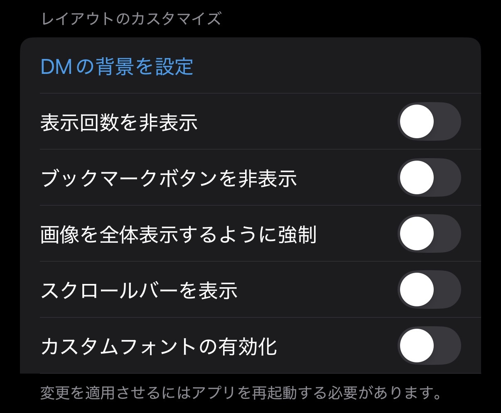

【BHTwitter】広告なし･動画ダウンロード可能なX(旧Twitter)のiOS向けアプリ

BHTwitterとは
App Storeからインストールした正規のXアプリは、Xプレミアムに加入しないと広告が消せない。 AdGuardなどの広告ブロッカーを導入した端末のブラウザ、もしくはBraveなどの広告ブロッカー機能付きブラウザでXを開けば広告は表示されなくなるが、横スライドでのタブ移動などのアプリならではのスムーズな操作感を失う。 また、Xプレミアムに加入していないユーザーはアプリ内で動画のダウンロードができず、外部のアプリやサイトを使わないとダウンロードできない。 さらにXプレミアムに加入していても一部の動画はダウンロードできない。 そこで、正規のXアプリをベースに広告を消せるように、動画をダウンロードできるようにした、BHTwitterというModアプリが公開されている。 ModアプリはSideStoreもしくはFeatherなどからサイドロードできるが、SideStoreの場合は7日に1度再署名する必要がある、アプリの通知が来ない、Featherの場合は証明書を購入する必要があるなど手間やコストがかかる。 また正規のアプリと違い、アプリをアップデートをする際は新しいバージョンのIPAファイルをダウンロードして上書きインストールする必要がある。 ここではBHTwitterの機能を紹介する。
DMが利用できない
2026年10月現在、BHTwitterではDMが閲覧･送信できず、メッセージタブで画面上部に "アップデートが必要です" と表示されている。 これは最近のXの仕様変更によるものであり、現状解決策は見つかっていない。
目次
アプリをインストールする

ここではBHTwitterのインストール方法を解説する。
方法
1.BHTwitterのIPAをダウンロードする
以下のリンクから "BH" と書かれたBHTwitterのIPAをダウンロードする。
2.IPAをサイドロードする
IPAのサイドロード方法はいくつかあるが、そのうちSideStoreとFeatherそれぞれでサイドロードする方法を以下のリンクで紹介している。 簡単に言ってしまえばSideStoreは無料だが制限付き、Featherは有料だがほぼ制限がない。 自分にあったサイドロード方法を選んでほしい。
機能
ここではBHTwitterの主な機能を紹介する。
設定画面の場所
1.プロフィールアイコンをタップする

2. "設定とプライバシー" をタップする

3. "設定" をタップする

BHTwitterの設定
･動画のダウンロード
動画を含むポストの右下にダウンロードボタンが表示されるようになる
･音声ポストを有効化
おそらくこの機能は現在利用できない。
･カスタム音声をアップロード
おそらくこの機能は現在利用できない。
･DMであとで返信
2026年10月現在、DM自体が利用できなくなっている。
･4Kメディアをアップロード
BHTwitterでなくても "設定とプライバシー" の "アクセシビリティ、表示、言語" の "データ利用の設定" から高画質でアップロードを有効にできる。
･トピックを非表示
･おすすめアカウントを非表示
･トピックをフォローするを非表示
･トレンド動画を非表示
･動画の字幕を無効化
BHTwitterでなくても動画を開いた際の設定でキャプションをオフにできる。
･ダイレクトセーブ
おそらくこの機能は現在利用できない。
･検索履歴を残さない
･プロフィールを翻訳
BHTwitterでなくてもプロフィールはGrokで翻訳できる。
･いいねの確認
･ポストする前に確認
･フォローの確認
･パスコードロック
アプリを起動するたびにロックの解除が必須になる。
･画像を最高画質で読み込む
･センシティブな画像の警告を無効化
･プロフィール情報のコピーを有効化
プロフィール画面の通知ボタンの左に設置されるボタンからプロフィール、ユーザー名、名前、URL、場所をコピーできるようになる。
･ポストを画像として保存
おそらくこの機能は現在利用できない。
･スペースバーを非表示
タイムライン上部に表示されるスペースの欄が表示されなくなる。
･RTLの無効化
･常に外部ブラウザで開く
おそらくこの機能は現在利用できない。
･URLからトラッキングパラメーター...
途切れているが、リンクにアクセスした際のXのトラッキングパラメーターを取り除ける。
･コピー後のポストURLホストを選択


TWITTER BLUEの設定
･ポストの取り消し
ポストを投稿してから一定時間取り消せるようになる。
･ダイレクトセーブ
おそらくこの機能は現在利用できない。
･広告を非表示
プロモーションの表示があるポスト、いわゆる広告を消せる。
･プレミアムの登録オファーを非表示
･テーマ
･アプリアイコン
･カスタムタブバー
デフォルトでホーム、Grok、話題を検索、通知、メッセージが表示されているナビゲーションバーをカスタマイズできる。 Grokは " " として表示されている。

レイアウトのカスタマイズ
･DMの背景を設定
2026年10月現在、DM自体が利用できなくなっている。
･表示回数を非表示
ブックマークボタンを非表示
･画像を全体表示するように強制
おそらくこの機能は現在利用できない。
･スクロールバーを表示
･カスタムフォントの有効化

関連記事
プロフィール

高度情報社会の最先端を駆け抜ける